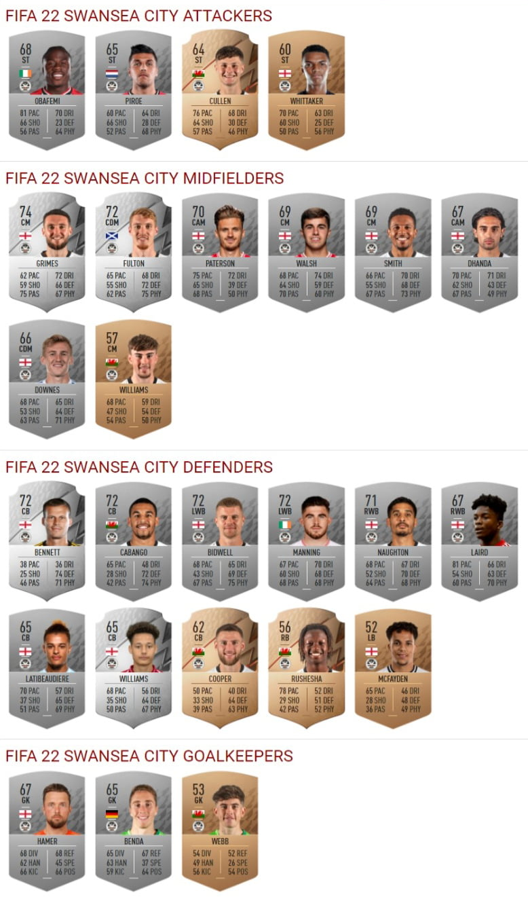

Iconic Players
From legends like Pelé, Maradona, and Zidane to modern stars like Messi, Ronaldo, and Mbappé — FIFA celebrates the greatest players. Each version highlights current form and past achievements, letting fans control their favorite athletes in virtual form.
